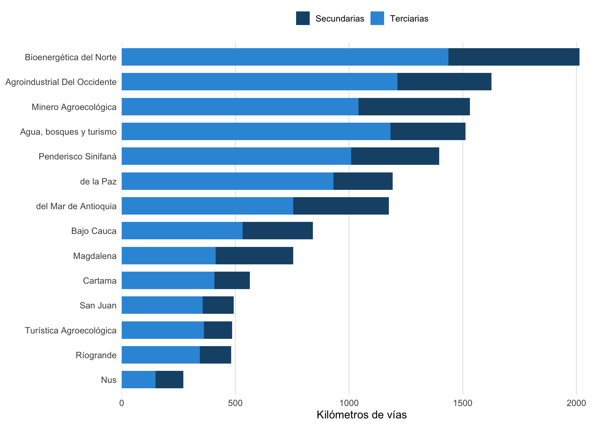
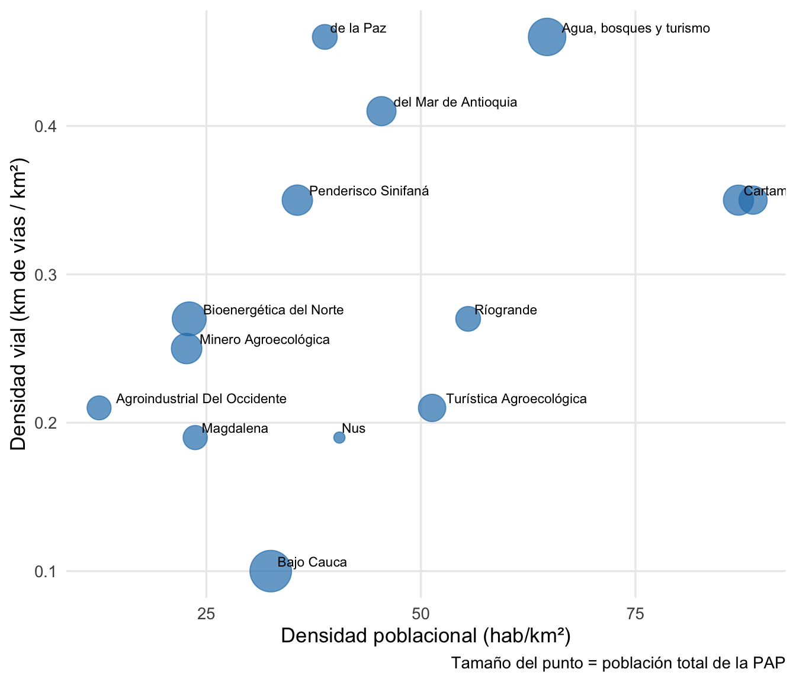
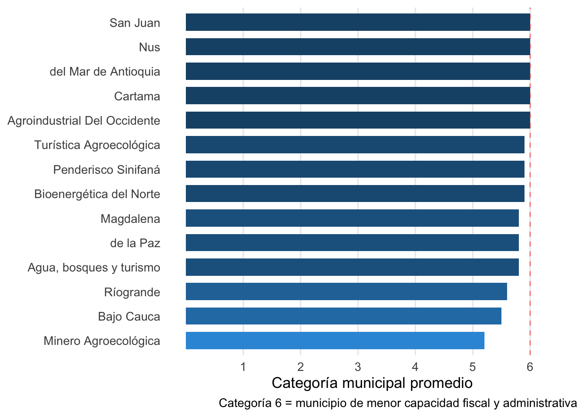

Delegación de Transporte
Modelos de gobernanza regional de transporte para las PAPs
El punto de partida: la red vial de las provincias
Antioquia cuenta con 18,017 km de red vial (excluyendo vías urbanas), de los cuales 4,559 km son vías secundarias a cargo del departamento y 11,631 km son vías terciarias bajo responsabilidad principalmente municipal. Las 14 PAPs cubren la mayor parte de este territorio.
| Provincia | Municipios | Población | Área (km²) | Densidad (hab/km²) | Vías terc. (km) | Vías sec. (km) | Total (km) | km/1000 hab |
|---|---|---|---|---|---|---|---|---|
| Bioenergética del Norte | 13 | 173,590 | 7,547 | 23.0 | 1,437 | 577 | 2,014 | 11.6 |
| Agroindustrial Del Occidente | 8 | 95,069 | 7,634 | 12.5 | 1,212 | 414 | 1,626 | 17.1 |
| Minero Agroecológica | 6 | 141,529 | 6,230 | 22.7 | 1,041 | 490 | 1,531 | 10.8 |
| Agua, bosques y turismo | 12 | 212,088 | 3,276 | 64.7 | 1,182 | 330 | 1,512 | 7.1 |
| Penderisco Sinifaná | 9 | 140,700 | 3,947 | 35.6 | 1,009 | 387 | 1,396 | 9.9 |
| de la Paz | 5 | 100,183 | 2,582 | 38.8 | 932 | 260 | 1,192 | 11.9 |
| del Mar de Antioquia | 4 | 130,166 | 2,865 | 45.4 | 755 | 420 | 1,175 | 9.0 |
| Bajo Cauca | 6 | 263,987 | 8,112 | 32.5 | 531 | 310 | 841 | 3.2 |
| Magdalena | 4 | 96,101 | 4,061 | 23.7 | 413 | 342 | 755 | 7.9 |
| Cartama | 11 | 138,752 | 1,595 | 87.0 | 408 | 156 | 564 | 4.1 |
| San Juan | 6 | 123,321 | 1,390 | 88.7 | 356 | 136 | 492 | 4.0 |
| Turística Agroecológica | 10 | 116,815 | 2,276 | 51.3 | 362 | 124 | 486 | 4.2 |
| Ríogrande | 5 | 99,800 | 1,799 | 55.5 | 343 | 138 | 481 | 4.8 |
| Nus | 5 | 58,955 | 1,455 | 40.5 | 148 | 123 | 271 | 4.6 |
Nota metodológica
Las estimaciones de red vial por PAP se calculan a partir de los datos del Anuario Estadístico de Antioquia (SIVA) a nivel de subregión, prorrateados por la proporción de área de cada PAP dentro de su subregión. Son aproximaciones útiles para dimensionar la escala del reto, no inventarios viales exactos.
La oportunidad: brechas de conectividad

Las PAPs con baja densidad vial y alta extensión territorial — como Bajo Cauca, Agroindustrial y Bioenergética — son las que más se beneficiarían de una coordinación provincial del transporte: sus municipios están dispersos, con grandes distancias y poca infraestructura para conectarlos.
El gráfico revela dos patrones:
- Cuadrante inferior izquierdo: PAPs rurales con baja densidad poblacional y vial — mayor necesidad de coordinación
- Cuadrante superior derecho: PAPs periurbanas con mejor conectividad — pueden liderar pilotos
Lo que dicen los Planes Estratégicos
Los 4 PEPs analizados coinciden: la conectividad vial es una prioridad universal. El Plan Vial Provincial es uno de los 11 proyectos compartidos por todas las provincias.
| Provincia | Proyecto | Eje | Plazo | Financiación |
|---|---|---|---|---|
| Agroindustrial | Plan Vial Provincial | Conectividad y Servicios | Corto-Mediano | Gob., Provincia, Mpios |
| Agroindustrial | Lineamientos OT corredor interocéanico | OT y Ambiente | Corto | MinTransporte, Gob. |
| Bio-Energética | Plan Vial Provincial | Territorio Articulado | Corto-Mediano | SGR, MinTransporte, Gob. |
| Río Grande | Plan Vial Provincial | Desarrollo Económico | Corto-Mediano | SGR, MinTransporte, Gob. |
| Turística | Plan Vial Provincial | Conectividad y Accesibilidad | Corto-Mediano | SGR, MinTransporte, Gob. |
| Turística | Navegabilidad Río Cauca | Conectividad y Accesibilidad | Corto-Mediano | MinTransporte, Gob. |
| Turística | Lineamientos corredor interocéanico | OT y Ambiente | Corto | MinTransporte, Gob. |
Hallazgo crítico: Ningún PEP incluye montos presupuestales ni diagnósticos cuantitativos de transporte (km, estado de vías, tráfico, frecuencia de rutas). El Plan Vial Provincial es una prioridad sin línea base.
El problema: fragmentación

Casi todas las PAPs están compuestas por municipios de categoría 5-6 (la más baja), lo que significa:
- Presupuestos limitados para inversión en infraestructura vial
- Poca capacidad técnica para planificación de transporte
- Dependencia de transferencias nacionales y departamentales
- La cooperación provincial es la única vía para alcanzar escala suficiente
Modelos internacionales de referencia
Verkehrsverbund (Alemania)
El modelo más maduro de coordinación regional de transporte (Anzai & Eidlin, 2024; Buehler et al., 2019):
| Dimensión | Descripción |
|---|---|
| Definición | Autoridad regional que integra servicios, tarifas y planificación de transporte público de múltiples municipios |
| Evolución | De 1 VV (Hamburgo, 1967) a 61 en Alemania (2017), cubriendo 85% de la población |
| Gobernanza | Tres modelos: (a) liderado por operadores, (b) liderado por gobiernos locales, (c) mixto |
| Clave del éxito | Coordinación voluntaria sin fusión de entidades; cada municipio mantiene identidad |
Los Verkehrsverbünde se establecieron por diferentes vías (Anzai & Eidlin, 2024):
- Top-down: Mandato del estado federal (Land)
- Bottom-up: Iniciativa voluntaria de municipios
- Híbrido: Combinación de presión estatal e iniciativa local
Transport for the North (Reino Unido)
Un modelo “ligero” de coordinación (Transport for the North, 2018; Urban Transport Group, 2023):
- Sub-National Transport Body (STB): Actúa como voz regional ante el gobierno central
- No opera servicios: Coordina planificación y prioriza inversiones
- Sin fusión: Las autoridades locales mantienen sus competencias
Para las PAPs con baja capacidad operativa, este modelo puede ser un primer paso realista.
Marco legal colombiano
| Norma | Contenido relevante |
|---|---|
| Ley 105/1993 | Marco general del transporte en Colombia |
| Ley 336/1996 | Estatuto Nacional de Transporte |
| Ordenanza 027/2024 | Marco departamental para delegación de transporte |
Secuencia propuesta
flowchart TD
A["<b>Fase 1: Diagnóstico</b><br/>Meses 1-6<br/>Inventario vial, rutas,<br/>operadores, demanda"] --> B["<b>Fase 2: Diseño</b><br/>Meses 6-12<br/>Modelo de gobernanza<br/>provincial de transporte"]
B --> C["<b>Fase 3: Piloto</b><br/>Meses 12-18<br/>1-2 PAPs con<br/>mayor disposición"]
C --> D["<b>Fase 4: Escalamiento</b><br/>Meses 18-24<br/>Expansión a<br/>las 11 PAPs"]
style A fill:#2980B9,color:#fff,stroke:#1A5276
style B fill:#3498DB,color:#fff,stroke:#2980B9
style C fill:#3498DB,color:#fff,stroke:#2980B9
style D fill:#1A5276,color:#fff,stroke:#1A5276
Reto principal: la paradoja de Krugman
La coordinación del transporte puede concentrar actividad económica en los municipios mejor conectados, profundizando desigualdades intra-provinciales. El diseño debe incluir mecanismos de compensación para municipios periféricos.
Vacíos de información
Para un diagnóstico completo de la oportunidad de delegación de transporte se requiere:
- Inventario vial detallado por municipio (km, estado, tipo de superficie) — disponible parcialmente en SIVA
- Rutas de transporte intermunicipal autorizadas y frecuencias — Supertransporte
- Datos de pasajeros en terminales de transporte — Terminales de Medellín
- Tiempos de desplazamiento entre cabeceras municipales — Anuario Estadístico
- Costos de mantenimiento vial por municipio — Secretaría de Infraestructura
Base de evidencia
- Buehler et al. (2019) — Verkehrsverbund: evolución y modelos de gobernanza
- Anzai & Eidlin (2024) — Rutas de gobernanza para autoridades regionales de transporte
- OECD/SIGMA (2024) — Cooperación intermunicipal en los Balcanes occidentales
- Transport for the North (2018) — Plan estratégico de Transport for the North
- Urban Transport Group (2023) — Gobernanza del transporte en el Reino Unido
- ITF-OECD (2020) — Planificación de transporte accesible (OECD)
- Hine & Cook (2022) — Conectividad rural y accesibilidad
Referencias
Anzai, K., & Eidlin, E. (2024). Routes to Regional Transit Governance: Researching the Histories of and Cataloguing the Methods Used to Establish German Verkehrsverbünde. Transportation Research Record. https://doi.org/10.1177/03611981231187533
Buehler, R., Pucher, J., & Dümmler, O. (2019). Verkehrsverbund: The Evolution and Spread of Fully Integrated Regional Public Transport in Germany, Austria, and Switzerland. International Journal of Sustainable Transportation, 13(1), 36-50. https://doi.org/10.1080/15568318.2018.1431821
Hine, J., & Cook, J. (2022). Rural Transportation Infrastructure in Low- and Middle-Income Countries: A Review of Impacts, Implications, and Interventions. Sustainability, 14(4), 2149. https://doi.org/10.3390/su14042149
ITF-OECD. (2020). Improving Transport Planning for Accessible Cities. International Transport Forum, OECD. https://www.itf-oecd.org/
OECD/SIGMA. (2024). Inter-Municipal Co-Operation in the Western Balkans (70; SIGMA Papers). OECD Publishing. https://www.oecd.org/content/dam/oecd/en/publications/reports/2024/06/inter-municipal-co-operation-in-the-western-balkans_67efc50a/a78a01e6-en.pdf
Transport for the North. (2018). Strategic Transport Plan. Transport for the North. https://www.transportforthenorth.com/
Urban Transport Group. (2023). UK Transport Governance: An Introduction. Urban Transport Group. https://www.urbantransportgroup.org/